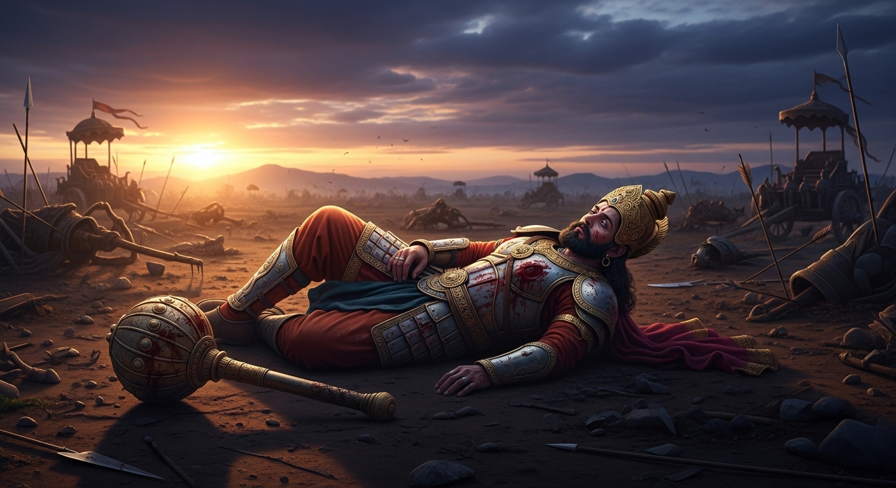
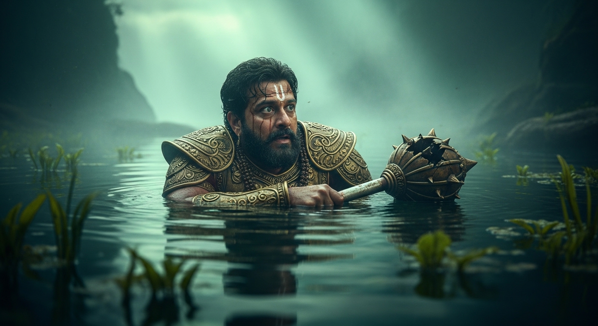
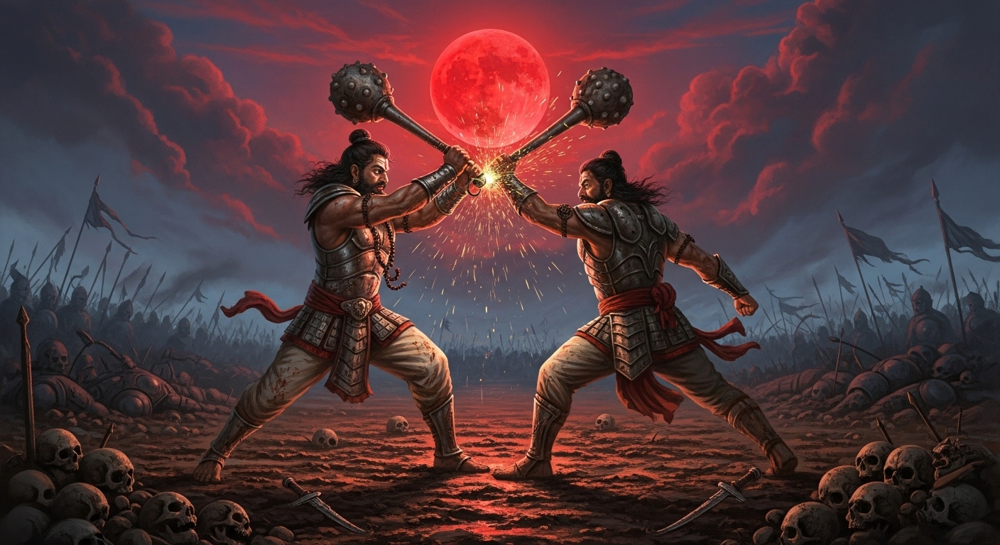

लेखक: भारतभूषण अग्रवाल
मूल विषय: युद्ध की निरर्थकता (Futility of War), विनाश और सत्ता का लालच।
पात्र परिचय:
एकांकी की शुरुआत महाभारत युद्ध के अठारहवें (अंतिम) दिन की शाम से होती है। कौरवों की पूरी सेना मारी जा चुकी है। दुर्योधन अपने प्राण बचाने के लिए द्वैपायन सरोवर (झील) के जल में छिप जाता है। परंतु पांडवों को इसका पता चल जाता है। भीम और दुर्योधन के बीच भयंकर गदा युद्ध होता है। युद्ध के नियमों के अनुसार गदा का प्रहार नाभि के नीचे नहीं किया जा सकता, लेकिन भीम छल से दुर्योधन की जाँघों पर वार करके उसे पराजित कर देता है। दुर्योधन मरणासन्न अवस्था में सरोवर के किनारे पड़ा है, और संजय उसके पास है।

अपनी जीत सुनिश्चित होने के बाद, युधिष्ठिर अपने भाइयों के साथ घायल दुर्योधन को देखने आते हैं। युधिष्ठिर सोचते हैं कि मृत्यु के समय दुर्योधन अपने किए गए पापों (जैसे द्रौपदी चीरहरण, लाक्षागृह षड्यंत्र) के लिए पश्चाताप करेगा। युधिष्ठिर उसे सांत्वना देने का प्रयास करते हैं और कहते हैं कि 'यह धर्म की अधर्म पर विजय है'।
युधिष्ठिर की बातें सुनकर दुर्योधन क्रोधित हो जाता है। वह पश्चाताप करने के बजाय उल्टा युधिष्ठिर पर तीखे प्रहार करता है। दुर्योधन तर्क देता है कि यह युद्ध 'धर्म' के लिए नहीं, बल्कि युधिष्ठिर की 'सत्ता की भूख' (Power-hunger) और 'महत्वाकांक्षा' के कारण हुआ है। दुर्योधन कहता है कि यदि युधिष्ठिर वास्तव में शांति चाहते, तो वे युद्ध से पीछे हट जाते। परंतु उन्होंने राज्य के लालच में अपने ही कुल (भाइयों, गुरुओं, पितामह) के खून से अपने हाथ रंगे हैं। दुर्योधन भीम द्वारा नियमों के विरुद्ध किए गए प्रहार (छल) का भी उल्लेख करता है और कहता है कि पांडवों ने 'अधर्म' का सहारा लेकर जीत हासिल की है।

दुर्योधन के तीखे और तार्किक सवालों के सामने 'धर्मराज' युधिष्ठिर निरुत्तर (Speechless) हो जाते हैं। उन्हें एहसास होता है कि दुर्योधन की बातों में कुछ सच्चाई है। जिस जीत को वे 'धर्म की जीत' मान रहे थे, वास्तव में वह लाखों लोगों की लाशों और अपनों के खून पर टिकी हुई थी। एकांकी के अंत में, दुर्योधन मृत्यु को प्राप्त होता है, लेकिन वह जाते-जाते युधिष्ठिर के मन में एक गहरा अपराधबोध (Guilt) छोड़ जाता है। युधिष्ठिर अपनी जीत के बावजूद अंदर से हार जाते हैं और युद्ध की निरर्थकता पर रोने लगते हैं।
इस एकांकी का मुख्य उद्देश्य युद्ध की भयानकता और निरर्थकता को दर्शाना है। लेखक ने यह स्पष्ट किया है कि युद्ध चाहे 'धर्म' के नाम पर ही क्यों न लड़ा जाए, उसका परिणाम केवल विनाश, मृत्यु और पश्चाताप ही होता है। युद्ध में कोई भी पक्ष पूरी तरह सही या पूरी तरह गलत नहीं होता; दोनों ही पक्ष स्वार्थ और महत्वाकांक्षा के वशीभूत होकर हिंसा का सहारा लेते हैं। एकांकी यह संदेश देती है कि सच्ची विजय वह नहीं है जो खून बहाकर प्राप्त हो, बल्कि वह है जो प्रेम और शांति से प्राप्त हो।